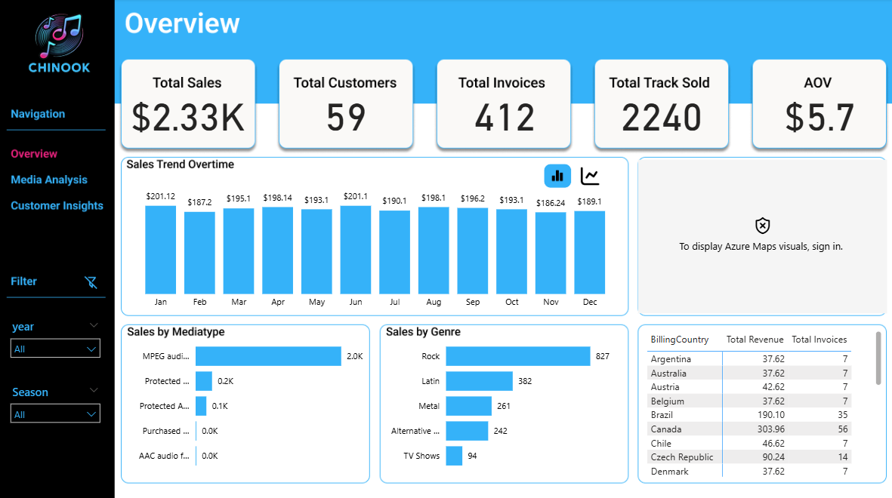
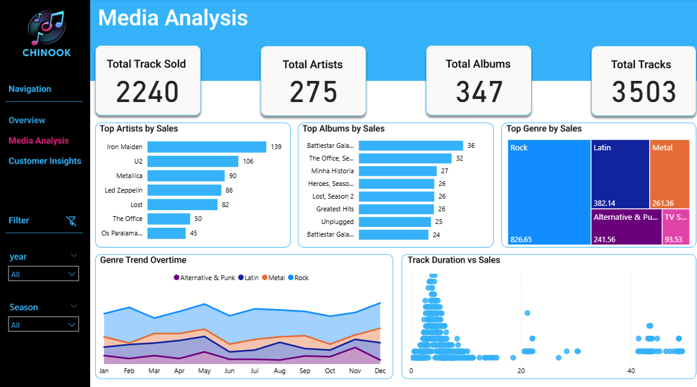
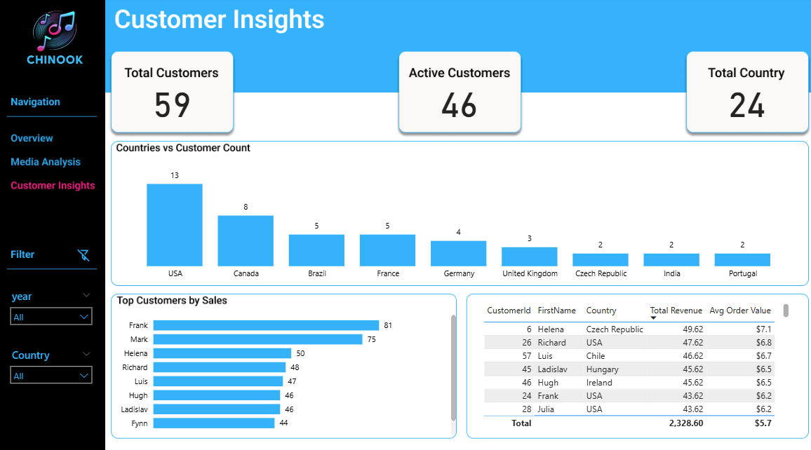
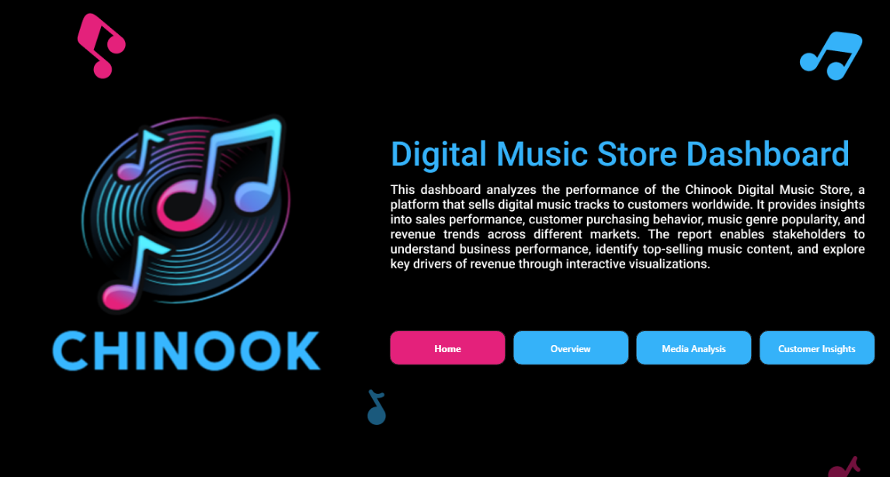

Chinook Digital Music Store Dashboard
A multi-page Power BI report exploring revenue, customer purchasing behavior, music catalog performance, and geographic sales trends for the fictional Chinook music store.
View Dashboards ↓Read Project DocumentationTurning transaction data into business visibility
The project connects the Chinook SQL database to Power BI through ODBC, builds a relational model and date table, and uses DAX measures to examine store performance through an executive overview, media analysis, and customer insights.
From source to dashboard
SQL data source
Connected the Chinook database through ODBC, bringing together invoice, invoice line, customer, track, album, artist, genre, and related tables.
Relationships & calendar
Established table relationships and created a date dimension with month, quarter, year, and season fields for time-based analysis.
DAX & report design
Defined sales, transactions, track volume, customers, artists, albums, average order value, and activity measures; organized findings across three report pages.
Dashboard pages




Selected observations
- Rock leads genre revenue in the displayed analysis, at approximately $827.
- 59 customers are represented in the dashboard, with 46 shown as active customers.
- 24 countries are represented in the customer geography view; the USA has the largest displayed customer count (13).
- The report supports comparison of top artists, albums, customer sales, and monthly genre patterns.